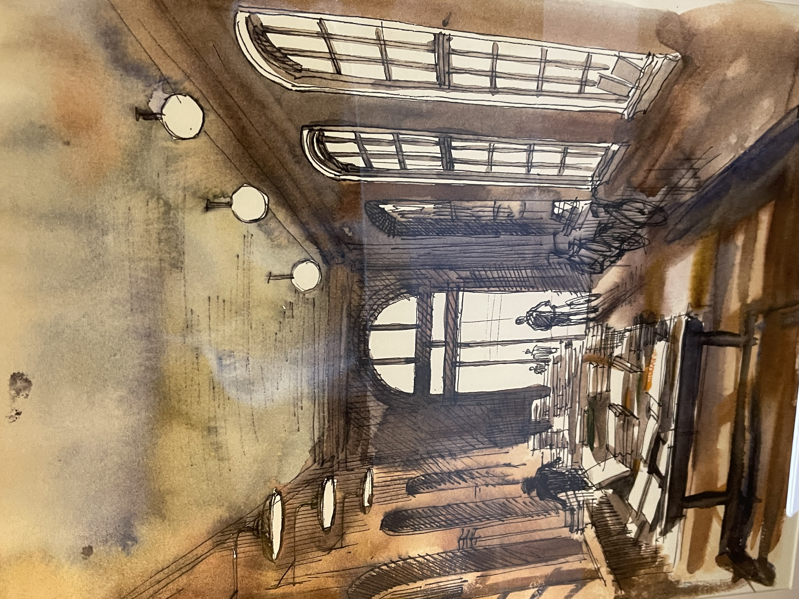
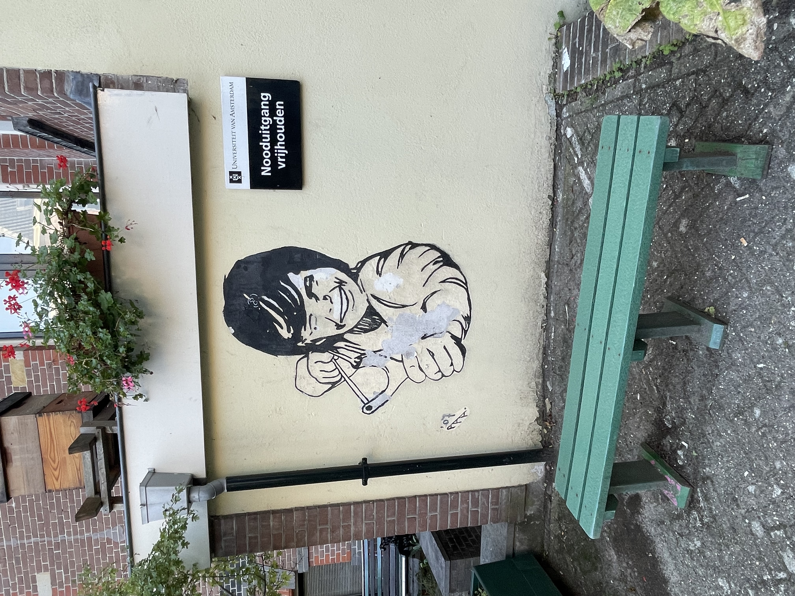
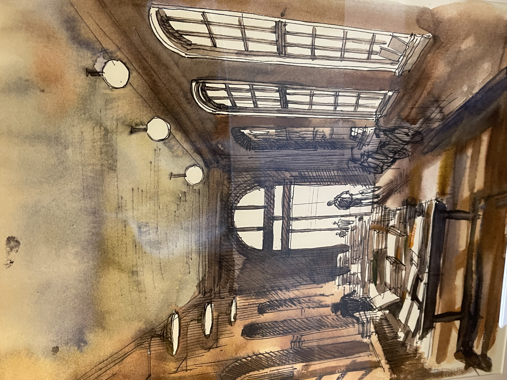
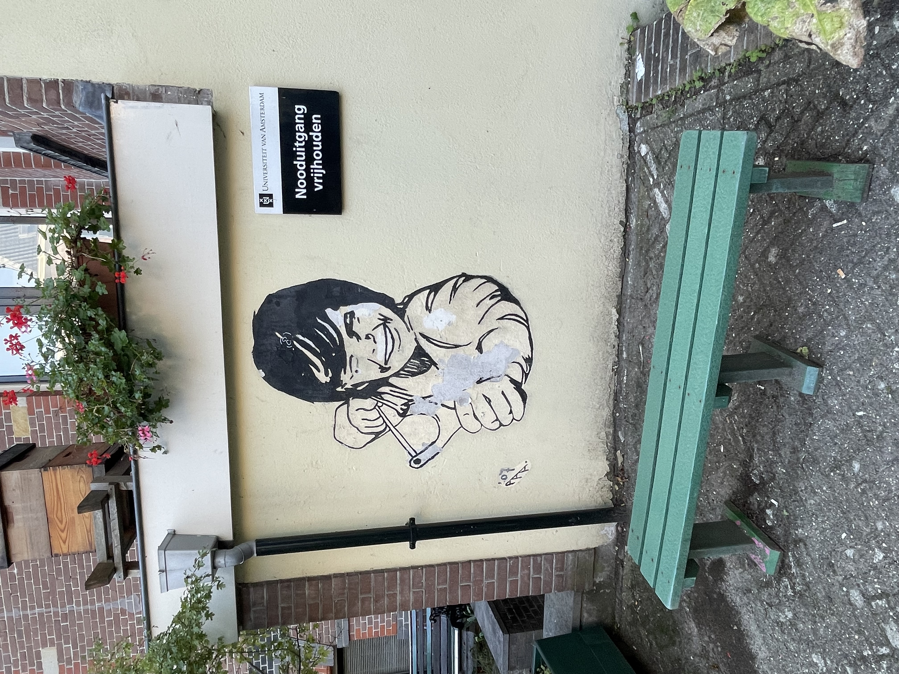

Oudeman- huispoort
Een plek waar je vintage boeken kan halen en het is de perfecte spot voor booklovers die tussen historische muren nieuwe ontdekkingen willen vinden.
Het oudemanhuispoort is als een chillplek in de chaos, met coole kunst, een boekenmarkt en een relaxte vibe. Perfect om te hangen en de drukte te ontlopen.

 


